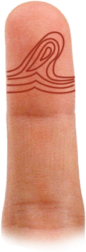
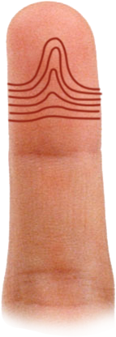
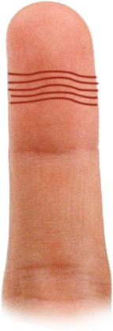
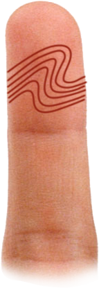
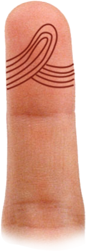

Vân tay Khi xem vân tay ở đầu ngón tay cái và các ngón khác, bạn phải chắc chắn rằng phải đủ
ánh sáng để có thể nhìn thấy rõ các hình dạnh của vân. Nếu cần, hãy sử dụng kính phóng đại..
Các vân tay có thể không giống nhau ở tất cả các ngón. Trong trường hợp này, bạn nên diễn
giải theo các vân tay nhiều nhất. Ý nghĩa của các hình vân tay có thể khác nhau, tùy thuộc
vào vân tay đó xuất hiện trên ngón tay nào. Vân tay hình mắt công Đây là một hình vân tay
hiếm gặp. Khu vực giữa của vân tay trông giống con mắt ở đuôi công. Nếu xuất hiện trên ngón
tay ở gò Thái Dương, vân tay này bảo vệ người sở hữu khỏi tai nạn chết người. Khi xuất hiện
trên các ngón tay khác, vân này cho thấy một người được bạn cho khả năng nhận thức hoặc trực
giác cao.

Vân tay vòng cung hình túp lều. Đây là hình vân tay ít gặp nhất, và nếu có thì chỉ xuất hiện
trên ngón tay trỏ. Có 4 vân tay này trên tổng số 10 ngón tay là một tầng số xuất hiện lớn.
Vân tay này cho thấy sự tinh tế về mặt tình cảm, đôi khi gần với sự thiếu kiên định. Người
này rất nhạy cảm với sự kích thích và cần sống trong môi trường yên bình. Là người có tính
nghệ sĩ và duy tâm, họ có xu hướng bốc đồng, thường hay căng thẳng và dễ bị rối loạn thần
kinh

Vân tay hình vòng xoắn Hình vân tay này có thể thấy trên ngón tay cái hoặc bất kỳ ngón tay
nào, nhưng nó thường xuất hiện nhất ở ngón tay trên gò Thái Dương. Nếu xuất hiện trên ngón
tay cái, nó cho thấy tính cách bướng bỉnh và võ đoán. Một người sẽ không chịu nhượng bộ
trong các cuộc tranh cãi, thậm chí ngay cả khi họ sai. Khi xuất hiện ở ngón tay trên gò Thái
Dương, vân tay hình vòng xoắn cho thấy một người định kiến rõ ràng về sở thích và sở ghét
đối với các đối tượng như quần áo và thức ăn. Vân này cho thấy một người không theo khuôn
phép, mà luôn cá nhân hóa mọi thứ. Họ dễ gặp các vấn đề căng thẳng rối loạn thần kinh và
bệnh tim

Vân tay hình mái vòm Vân tay hình mái vòm thường không hay xuất hiện. Nhiều đường vân tay
này cho thấy một người có khả năng xây cầu nối giữa họ và những người khác trên thế giới. Họ
có nhu cầu bảo đảm sự yên ổn cho gia đình và cộng đồng. Khẩu hiệu của họ là sự nhiệt huyết
và sự trung thành. Họ lựa chọn con đường của bậc thánh nhân. Về mặt sức khỏe, họ dễ mắc bệnh
tiêu hóa kém, ung nhọt và rối loạn máu.

Vân tay hình vòng kép Vân tay hình hai đường vòng thể hiện hai con đường để lựa chọn, và thể
hiện một người thiếu quyết đoán, phải mất hàng tiếng đồng hồ để xem xét một vấn đề. Vân tay
này thường xuất hiện nhất ở ngón cái hoặc ngón trỏ. Nếu vân tay này xuất hiện ở ngón trỏ thì
người này thiếu quyết đoán hơn, mặc dù có đầu óc thực tế, thiên về vật chất, nhưng cũng có
thể trở nên cứng nhắc, hà khắc, thích chỉ trích và hay hờn giận. Người này dễ gặp các điều
kiện bất lợi và các rắt rối về tinh thần.

Vân tay hình đường vòng Đây là vân tay hay gặp nhất trong tất cả các hình vân, còn được gọi
là “đường vòng mặt trăng”, bởi vì nó hướng tới phía Thái Âm của bàn tay. Vân tay này ở trên
bất kỳ ngón tay nào cũng thể hiện sự thích nghi và linh hoạt cao trước các điều kiện thay
đổi. Người có nhiều hình vân này dễ cảm thông và không bị hạn chế bởi quan điểm hạn hẹp. Họ
có tầm nhìn rộng và tư tưởng tự do.
